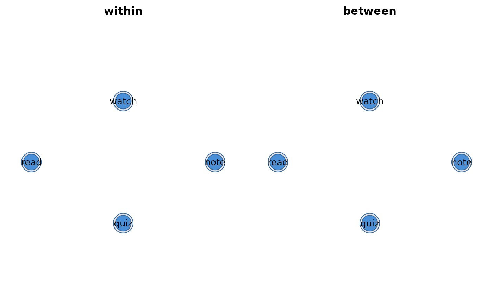

Within-actor and between-actor networks from event data
Source:R/multilevel.R
psychnet_multilevel.RdA psychnet_multilevel object holds a pair of Gaussian graphical
networks estimated from event data with several occasions per actor: a
within-actor network and a between-actor network. psychnet() returns it
for event data (an event log, or a table of action frequencies with one
row per occasion and an id column) with several occasions per actor and
standardize = FALSE, estimating both networks with the chosen method.
When the same actors, such as students in a learning environment, contribute several occasions (sessions), the association between the frequencies of two actions has two sources. Within actors, it shows whether an actor who performs one action more often than usual on an occasion also performs the other more often. Between actors, it shows whether actors who perform one action more often on average also perform the other more often. The two can differ in size and even in sign. The within network is estimated from each occasion's deviations from its actor's mean action frequencies, with the pooled within-actor degrees of freedom (occasions minus actors) as sample size; the between network from the actors' mean frequencies, with the number of actors as sample size.
print() reports the numbers of actors, occasions, nodes and edges,
summary() and as.data.frame() return data frames, and plot() draws
the two networks side by side.
With standardize = TRUE (the default), psychnet() returns only the
within-actor network, as a single psychnet. For persons measured at
fixed waves, with effects from one wave to the next, use panel_gvar().
Usage
# S3 method for class 'psychnet_multilevel'
print(x, ...)
# S3 method for class 'psychnet_multilevel'
as.data.frame(x, row.names = NULL, optional = FALSE, ...)
# S3 method for class 'psychnet_multilevel'
summary(object, ...)
# S3 method for class 'psychnet_multilevel'
plot(x, ...)Arguments
- x, object
A
psychnet_multilevelobject.- ...
Passed to
cograph::splot()byplot(); ignored by the other methods.- row.names, optional
Ignored.
Value
print() returns x invisibly, after printing the numbers of
actors and occasions and each network's numbers of nodes and edges.
as.data.frame() returns one row per edge of the two networks,
with columns level ("within" or "between"), from, to and
weight.
summary() returns a data frame with one row per level
("within", "between") and columns level, nodes, edges,
mean_abs_weight (0 for a network without edges) and n (the sample
size used at that level).
plot() draws the two networks side by side with
cograph::splot() and returns x invisibly.
Conditions
psychnet_bad_input from plot() when the cograph package is not
installed.
See also
psychnet() for fitting; event_frequencies() for the
conversion of an event log; psychnet for the two networks.
Examples
set.seed(1)
ev <- data.frame(
Actor = sample(paste0("s", 1:40), 1200, replace = TRUE),
Session = sample(1:3, 1200, replace = TRUE),
Action = sample(c("read", "quiz", "note", "watch"), 1200, replace = TRUE))
# Actions drawn at random, so neither network is expected to have edges.
ml <- psychnet(ev, actor = "Actor", session = "Session", standardize = FALSE)
ml
#> <psychnet_multilevel> glasso networks (within + between)
#> actors: 40 occasions: 120
#> within : 4 nodes, 0 edges
#> between: 4 nodes, 0 edges
summary(ml)
#> level nodes edges mean_abs_weight n
#> 1 within 4 0 0 80
#> 2 between 4 0 0 40
as.data.frame(ml)
#> [1] level from to weight
#> <0 rows> (or 0-length row.names)
if (requireNamespace("cograph", quietly = TRUE)) plot(ml)
